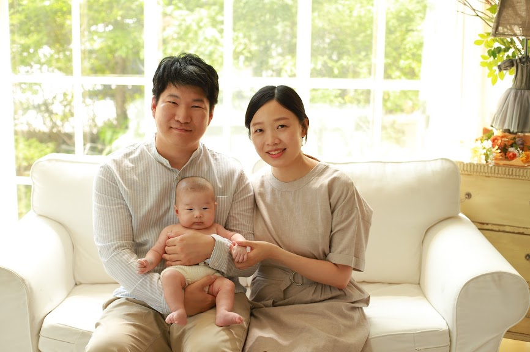
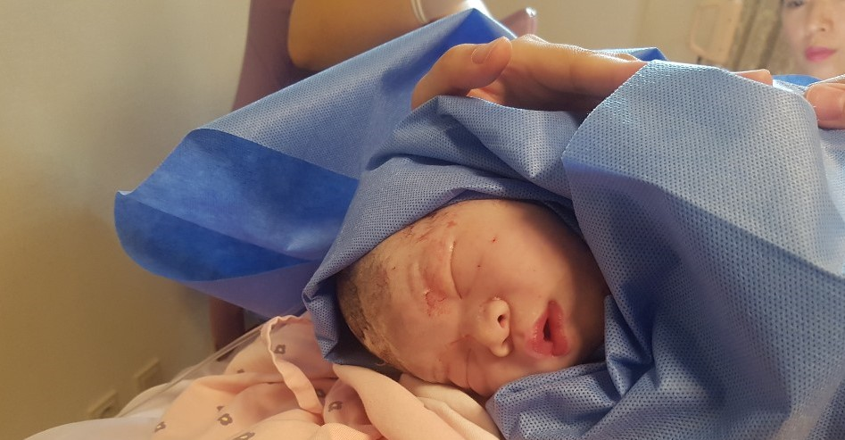
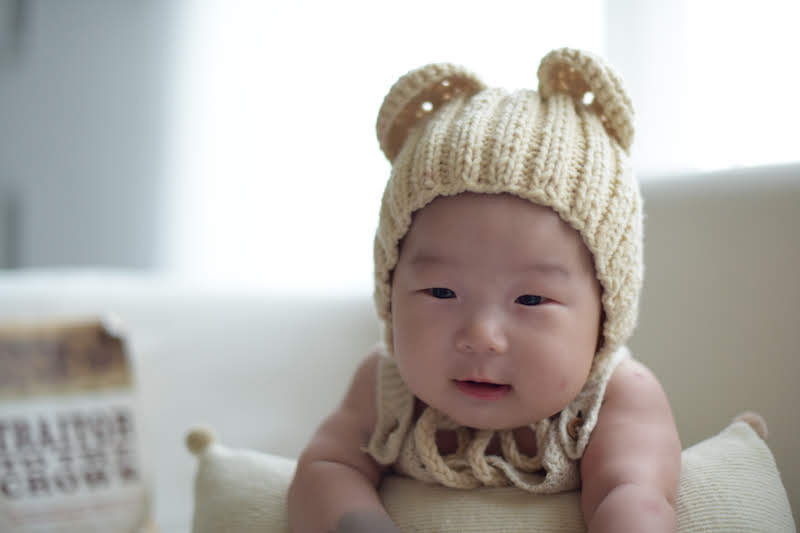

HELLO, SEOJUN / PROFILE
안녕, 서준이야.
우리에게 찾아온 너를 소개합니다.

THE DAY WE MET
2019년 5월 4일,
우리는 너를 만났어.
한세훈 아빠와 김태진 엄마의 아들, 한서준.
작은 너를 처음 품에 안았던 날을 기억합니다.
- 태어난 날
- 2019. 05. 04
- 태어난 곳
- 수원 시온 산부인과
- 태어났을 때 몸무게
- 3.1 kg
A NAME FULL OF LOVE
이름에 담은 마음
한나라 한
서차례 서
준모일 준
시간이 지날수록 발전하며,
많은 사람이 공경하고 우러러보는 사람.


이제, 추억을 펼쳐볼까요?사진첩 구경하기